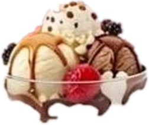

Nooshinبستنی نوشین
بستنیهایی از میوهی طبیعی و لبنیات ارگانیک که در دستههای کوچک و با دقت تهیه میشوند.
مشاهدهی منوخدمات ما
Our Story
داستان ما
بستنی نوشین با میوهی تازه و لبنیات ارگانیک ساخته میشود؛ بستنیای سبک و خوشطعم، بدون افزودنی مصنوعی و نگهدارنده.
هر طعم پس از آزمایشهای متعدد در آشپزخانهی کوچک ما به منو راه پیدا میکند.
لبنیات ارگانیک
طعمهای دستساز
پورهی میوهی واقعی
بدون افزودنی مصنوعی
Interactive
بستنی تعاملی
تاپینگها را روی بستنی بگذارید و نتیجه را از نزدیک ببینید.
در حال آمادهسازی…
برای چرخاندن بکشید